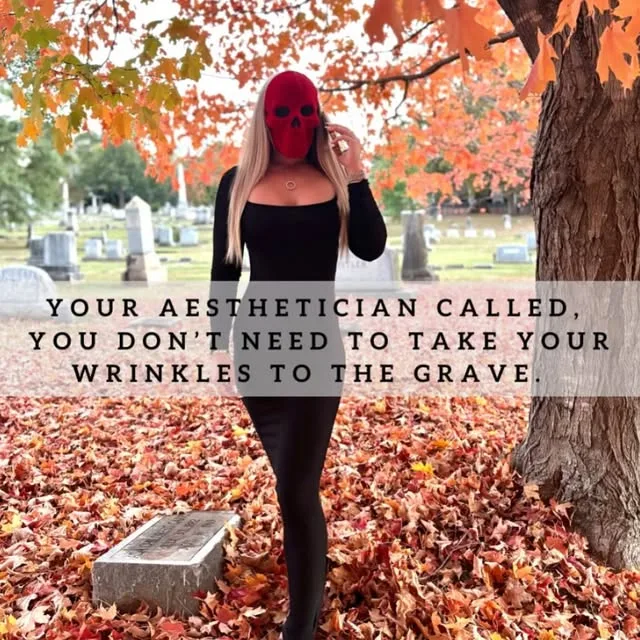

Draft for Katrina’s review. Not published.
The ABK JournalYou don't need to take your wrinkles to the grave: treatments for fine lines and firmness
Treatments for fine lines, wrinkles and firmness in Charlotte: microneedling, PDRN, chemical peels and a home routine built on sunscreen and retinoids.
From the ABK SKIN studio
Charlotte, NC · Updated

Just in time for spooky season, ABK SKIN posted a photo of Katrina in a cemetery with a message: "Your aesthetician called. You don't need to take your wrinkles to the grave."
It is a joke with a real point. Fine lines and loss of firmness are a normal part of life, but there is a lot you can do about how they look. This guide walks through why lines form, the daily habits that matter most, the professional treatments for fine lines at ABK SKIN in Charlotte, and how to put them together into a realistic plan.

In short
- Daily sunscreen is the foundation. It protects the results of everything else.
- A retinoid at night is one of the most studied ingredients for the look of fine lines and texture.
- Microneedling ($395) and Enhanced Microneedling ($550) are chosen for fine lines, texture and firmness, and are usually planned as a series.
- The Perfect Derma Peel ($295) is a true chemical peel for tone, texture and fine lines, with up to seven days of peeling.
- Monthly facials keep skin hydrated and refreshed between corrective treatments.
- The best results come from combining home care, a corrective series and maintenance.
Why lines form
Several things contribute:
- Collagen and elastin decline gradually with age, so skin becomes thinner and less springy.
- Sun exposure is one of the biggest contributors to visible aging.
- Repeated expressions create lines where skin folds most, such as around the eyes, between the brows and across the forehead.
- Dehydration makes fine lines look more noticeable.
- Lifestyle factors such as sleep, stress and smoking also play a part.
Fine lines versus deeper wrinkles
Fine lines are shallow and often look worse when skin is dehydrated. They tend to respond well to hydration, a good routine and treatments that improve texture. Deeper wrinkles and folds involve more loss of firmness and volume. Skincare treatments can improve the overall look and quality of the skin around them, but some concerns, such as expression lines that are deeply etched or significant volume loss, are better discussed with a licensed medical provider.
No facial stops time. The goal is skin that looks smoother, firmer and healthier, at any age.
Start with daily habits
Sunscreen, every day
If you do one thing, do this. Daily broad-spectrum sunscreen protects the results of everything else, and it is especially important when you use retinoids or have professional treatments. Revision Skincare's Intellishade Original combines SPF 45 with a sheer tint, peptides and vitamin C. If you prefer mineral sunscreen, Intellishade TruPhysical Clear is a sheer, all-mineral SPF 50. Our guide to choosing a size or formulation compares the Intellishade options.
A retinoid at night
Retinoids are among the most studied ingredients for the look of fine lines and texture. Revision Skincare's Retinol Complete uses time-released retinol and comes in two strengths, 0.5 ($118) and 1.0 ($138), so you can start gently. Introduce it slowly, a few nights a week, and stop before any professional peel or microneedling as instructed.
If you want a gentler option, Revision's D·E·J Night Face Cream ($190) pairs time-released 0.25% retinol with bakuchiol in a hydrating cream. Hydrinity's RetaXome Daily Retinal Hydrator ($145) uses retinal. Retinoids are generally avoided during pregnancy, so check with your doctor if that applies to you.
Antioxidants and hydration
Revision Skincare's D·E·J Daily Boosting Serum ($230) is described by the brand as an anti-aging serum for firmness, fine lines, radiance, texture and tone. Hydrating serums with hyaluronic acid help skin look plumper day to day. Hydrinity's Renewing HA Serum ($140) is designed to reduce the signs of skin aging, boost radiance and improve elasticity. A vitamin C serum in the morning is a strong partner to sunscreen. Our vitamin C guide explains how to choose one.
Do not forget your neck, eyes and hands
The eye area and the backs of the hands often show changes before the face does. A few targeted products from the ABK shop:
- Eye Renew Complex ($120) from Hydrinity, for hydration and the look of fine lines and puffiness around the eyes.
- YouthFull Hands ($74), Revision's hand treatment.
Lifestyle basics
Sleep, stress, hydration and not smoking all show on your skin. They are not glamorous, but they add up.
Professional treatments for fine lines
Microneedling ($395, about 90 minutes)
Microneedling creates controlled micro-channels in the skin to prompt its natural renewal process. At ABK SKIN it is chosen to improve the appearance of fine lines, acne scarring, enlarged pores, uneven texture and tone, and loss of firmness. The depth, serums and plan are chosen after your skin is assessed. Changes build gradually as the skin renews, so it is usually planned as a series.
Enhanced Microneedling ($550, about 90 minutes)
Enhanced Microneedling pairs microneedling with a professional serum. Two options are chosen especially for aging concerns:
- Microneedling + GHK-Cu + PDRN, for texture, firmness, tone and overall skin quality. This is the treatment nicknamed the salmon sperm facial. Our PDRN microneedling guide explains it step by step.
- Microneedling + Mesotherapy Firming, for skin starting to lose firmness, fine lines, texture and enlarged pores.
The other two options, Radiance and Hydrate, are chosen for dullness, uneven tone and dehydration, which can also make lines look more noticeable.
The Perfect Derma Peel ($295, 60 minutes)
The Perfect Derma Peel is an advanced chemical peel chosen for uneven tone and pigmentation, sun damage, rough texture, fine lines and wrinkles, acne and post-acne marks. It is a true chemical peel: peeling can continue for up to seven days, and you should avoid exfoliants and retinoids for a week beforehand.
Facials that support the routine
A Platinum HydraFacial with a booster chosen for fine lines, or The Sculpting Facial for tension and puffiness, will not replace corrective treatments, but they keep skin hydrated and looking refreshed between them. The 90-minute ABK Glow Facial ($325) follows what your skin is asking for that day.
Comparing the options
| Treatment | Main goal | Time | Downtime |
|---|---|---|---|
| Microneedling | Fine lines, texture, firmness, scarring | About 90 min | Redness is common; ask at consultation |
| Microneedling + GHK-Cu + PDRN | Firmness, texture and overall skin quality | About 90 min | Redness is common; ask at consultation |
| Microneedling + Mesotherapy Firming | Early loss of firmness, fine lines | About 90 min | Redness is common; ask at consultation |
| The Perfect Derma Peel | Pigmentation, texture, fine lines | 60 min | Peeling can last up to 7 days |
| Platinum HydraFacial | Hydration and a monthly reset | 60 min | None expected |
| The Sculpting Facial | Tension and puffiness | 60 min | Usually none |
Building a realistic plan
The best results usually come from combining:
- Daily protection and a home routine, especially sunscreen and a retinoid.
- A corrective series, such as microneedling or peels, spaced as your aesthetician recommends.
- Maintenance, such as a monthly facial, to keep skin healthy in between.
That is the ABK method in practice: Analyze, Correct, Build, Maintain.
What a plan might look like
Every plan is personal, but a typical shape is a consultation first, then a series of microneedling or peels spaced over several months, with a monthly HydraFacial or facial in between and a steady home routine throughout. A membership can make the maintenance part easier. ABK SKIN CLUB includes Microneedling as a six-month anniversary option. Our membership comparison explains both plans.
Setting expectations
Corrective treatments work gradually. Take photos in the same light before you start and every few weeks so you can see change honestly. Results vary from person to person.
Who should check first
If you are pregnant or breastfeeding, have an active skin condition, a history of keloids or are using prescription skincare or medication that affects your skin, mention it at booking. Your aesthetician may recommend a different approach or ask you to check with your doctor.
The takeaway
Lines are normal. How much they bother you is up to you, and there are effective, gradual ways to improve how they look. Start with sunscreen and a retinoid, add a corrective series when you are ready, and keep skin healthy with regular facials. Book a Skin Consultation to build a plan around your skin and your timeline, or browse the fine lines concern page.
Frequently asked questions
What age should I start treating fine lines?
There is no set age. Daily sunscreen is worth starting at any age, and your aesthetician can suggest treatments based on your skin.
What is the best treatment for wrinkles in Charlotte?
It depends on your skin and goals. At ABK SKIN, Microneedling and Enhanced Microneedling are chosen for fine lines, texture and firmness, and The Perfect Derma Peel for tone, texture and fine lines. A consultation helps you choose.
Which is better, microneedling or a chemical peel?
They do different things. Microneedling is chosen for texture, firmness and scarring. Peels are chosen for tone, pigmentation and surface texture. A consultation helps you decide.
Can I combine treatments?
Often, yes, when they are spaced correctly. Your aesthetician will plan the order and timing.
How long before an event should I book microneedling or a peel?
Leave plenty of time. Redness is common after microneedling, and The Perfect Derma Peel can mean up to a week of peeling. See our guide to booking a facial before an event.
Do I need to stop retinol before treatment?
Usually, yes. Before The Perfect Derma Peel, avoid exfoliants and retinoids for a week. Follow the instructions you are given for any treatment.
Are there treatments for wrinkles besides facials?
The ABK SKIN booking menu focuses on skincare treatments such as facials, peels and microneedling. For injectables or other medical procedures, talk to a licensed medical provider.
Questions about your skin?
Email abkskinn@gmail.com or bring them to your next appointment.